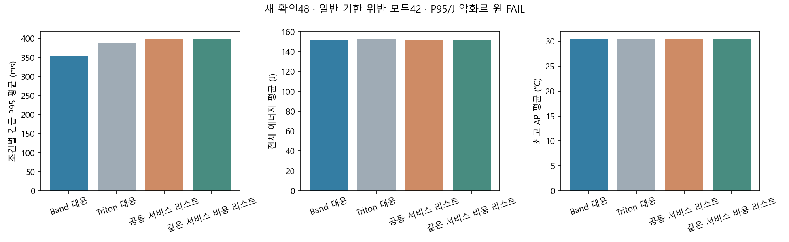
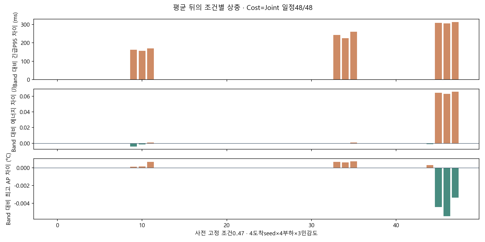
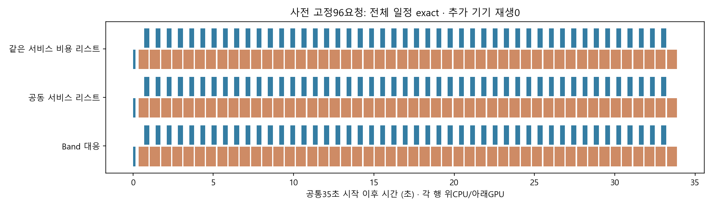

물리 허용과 예측 성능 제한을 분리했다. 새248환경·학습0·요청 전량 완료·실패0. 원 엄격 기준은 두 정책 모두 FAIL이다. 열·에너지 절감 방법론 확립으로 표시하지 않는다.
| 정책 | 완료 | 일반 기한 위반 | 조건별 긴급P95 평균ms | Band 대비 평균 ΔJ | 평균 ΔAP°C |
|---|---|---|---|---|---|
| Band | 3168 | 42 | 354.076018 | 0.000000 | 0.000000 |
| Triton | 3168 | 42 | 388.544694 | 0.455516 | 0.018737 |
| JointList | 3168 | 42 | 398.753454 | 0.003913 | -0.000205 |
| CostList | 3168 | 42 | 398.753454 | 0.003913 | -0.000205 |
각3168/3168 완료. 기한 위반은 늦은 완료이고 실행 오류가 아니다. P95 평균은 조건별 P95의 평균이다. 새4도착 seed×4부하×3민감도 문맥으로48독립 실측이 아니다.
개별 긴급 요청의 L0 응답 비악화 제한을 제거했다. 현재 전체 큐의 기한 위반·지각량, 공동 ECT, CPU 전용 탐지의 호환성을 먼저 본다. JointList가 서비스 기준, CostList/RL은 같은 서비스·현재 P95와 CPU 전용 응답을 보호하는 후보를 고른다. 예측 마스크는 미래 서비스 보장이 아니다.
공유 JointDispatcher는 최대4개 호환 EDD 자원 분할을 사용하는 유한 근사다. 향후 전체 본정책을 재귀적으로 실행하는 정확 rollout이 아니다. 같은 dispatcher를 fallback과 예측 suffix에 적용하며 원 파일을 수정하지 않는다.



execution_contract.json · summary.json · comparison.csv · condition_differences.csv · selection_diagnostics.json · energy_decomposition.csv · J_invariance.json · representative_receipt.json · verification.json